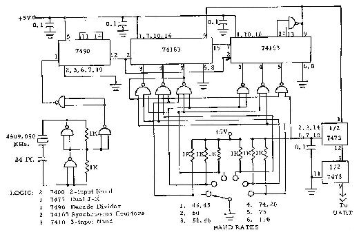
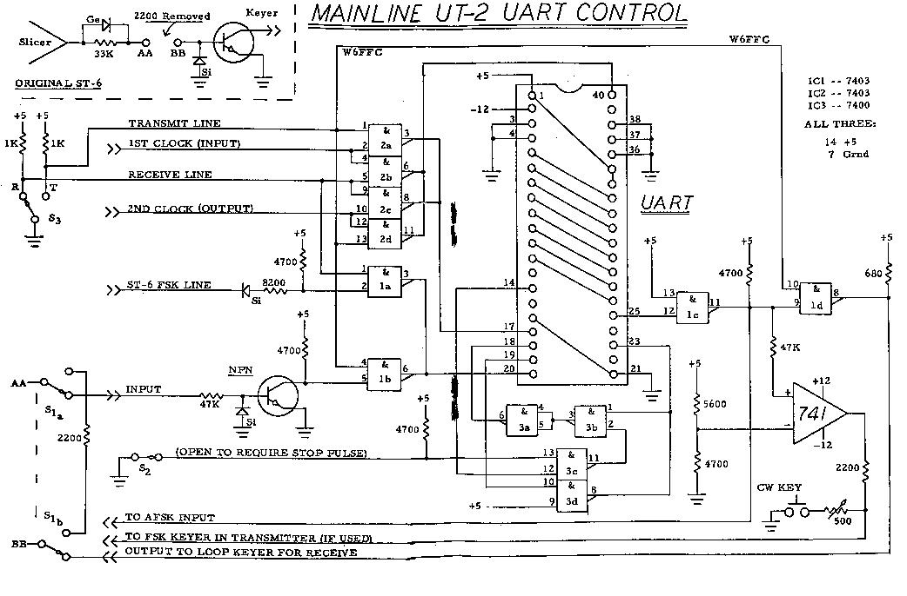

IRVIN M.HOFF, W6FFC
INTRODUCTION:
Computer technology (and hence data communications) is making
exceptional progress. It is interesting to speculate where we
might be in just a few more months, let alone by the end of the
year.
Hand-held calculators are already as low as $17 for 8-digit types with floating decimal. Crystal-controlled wristwatches with digital displays are common-place with new manufacturers entering the market constantly. Estimates of household computers being available by 1980 are being revised downward almost daily.
The semi-conductor industry is turning out new MSI and LSI chips at a prodigious rate. Many of these will have a direct relationship to projects amateur RTTY operators will find not only fascinating but quite useful. Three such chips are the UART, the FIFO and the microprocessor. The last mentioned is the heart of the small minicomputers now showing up on the market. At least nine (9) manufacturers are making (or soon will be) such chips. The Intel Corporation under contract from Datapoint Corp. initiated work along this line in 1969, producing the 8008 chip and now the 8080. The Altair 8800 minicomputer (MITS Corp. in Albuquerque, N.M.) uses this versatile item in a product that several amateurs are already beginning to use.
THE UART:
This versatile chip was discussed earlier in RTTY JOURNAL (April
1974) with schematics to use if offered the following month's
publication (May 1974). The UART is a 40-pin "super
chip" that has important uses not only for RTTY but for
computer operation as well. The UART is a composite that includes
a transmit section, a receive section and a control section. It
accepts asynchronous (serial, with start and stop pulses) input
such as ASCII or Baudot and converts this to parallel. The
transmit section then can take parallel information and convert
to asynchronous output with start and stop pulses added. You can
use this as an interface between the parallel information used in
a computer and the incoming signal, or (as was shown in the
earlier articles), use it as a regenerative repeater or as a
"3-speed gearshift" by merely adding a second clock
speed. The UART has several interesting additional qualities such
as the verified start pulse and optional required stop pulse on
each incoming character. Since the output of the UART always has
a start and stop pulse added, there is no possibility of the
printer itself getting out of synchronization. Those using the
UART on the output of their demodulator report noticeable
improvement in the quality of the copy, especially during quite
marginal reception. Paul Blankmann (KH6AG) compared his Mainline
ST-6 with UART, to a new and expensive (over $1,000) commercial
demodulator. He said in his estimation the ST-6 did as well or
better -- in any event it was a most worthwhile addition to his
equipment.
THE FIFO:
The FIFO is essentially a storage register for parallel
information and stands for First In First Out. It is also
sometimes called a "silo" register since its action is
similar to that of a silo that stores feed for livestock during
the winter. Characters that are entered into the FIFO at one end
are automatically transferred toward the other end. As a result
the chip is very easy to use in conjunction with the UART to
temporarily store characters until the printer is ready for
another character. This same feature can be used to allow a
steady output speed from normal typing which is somewhat erratic
by nature.
THE MAINLINE UT-2:
The original UART article had subsequent schematics that showed
how it could be used as a regenerative repeater for improved
reception. A crystal-controlled clock was included as was an
optional NE-555 clock. The circuit could be used as a
"3-speed gearshift" if a second clock was added. The
crystal-controlled clock was actually a synthesizer that could
easily select any of six (6) different speeds.
The UT-2 expands the original circuit so that you can use the UART both for transmit and receive. Among other things this will allow the use of 100 speed gears on the printer, and then all legal speeds may be readily copied by merely changing the input clock speed to the appropriate selection. At the same time, the two clocks are automatically switched with one simple "receive-transmit" switch so the operator may transmit at any legal speed such as. 60, 67, 75 or 100 WPM. A fringe benefit of using the UART for transmit is the perfect output signal regardless of the distortion the keyboard itself might have up to at least 45%. Assuming the operator is not only interested in improving his own copy but in transmitting the best signal he can, this is certainly one of the easiest and most satisfactory methods of doing both concurrently! A switch (51) is provided to by-pass the UART for any reason that might appeal to the operator.
EXPLANATION OF UT-2 CIRCUIT:
The receive-transmit switch does several things simultaneously.
It reverses the two clock speeds so you can transmit at the same
speed you were listening to. It also changes the UART input from
the incoming signal via the slicer output to the typing you are
doing locally via the FSK output line. As a result, the output to
the transmitter now comes from the UART rather than directly off
the local loop. To retain the polar switching of the original FSK
output, a 741 op amp has been added. This allows normal selection
of narrow shift C.W. identification. If AFSK is exclusively used,
this 741 may be left off as would the 47K, 5600, 4700 and 2200
ohm resistors. The 500 ohm pot and C.W. key would also be
removed.
IC-2 is used only to switch the two clock speeds when going from receive to transmit. IC-la allows the local loop to operate the UART during transmit and is inhibited during receive. IC-lb allows the slicer output to operate the UART during receive and is inhibited during transmit. IC-Ic works all the time and is used primarily as an inverter/buffer. IC-Id allows the output of the UART to operate the printer during receive and is inhibited during transmit since the printer gets copy from the local keyboard while transmitting. Both IC-i and IC-2 are open-collector types to allow the outputs to be paralleled for switching purposes.
The schematics included with the original article showed an optional switch to allow the operator to require the incoming character to have a stop pulse. The UT-2 uses IC-3 to provide this same feature, but in a rather different manner.
If the stop pulse is not present when expected, pin 14 of the UART goes high instead of remaining low. This is called the "framing error flag" by most of the manufacturers. One clock period later the "data available flag" at pin 19 of the UART goes high, which normally is used to transfer the character to the transmit side. This one clock period gives you ample time to reject the character if a stop pulse is required. If you open switch S-2 to require a stop pulse on each character received, and no stop pulse is present, pin 14 goes high and now the output of IC-3c goes low. This causes the output of IC-3b to go high which in turn causes the output of IC-3a to go low. This output is applied to the UART "reset data available" pin 18. This prevents pin 19 from going high at the end of that one clock period. As a result, the UART does not think it has received a character and the data is not transferred to the transmit section at all. The framing error flip-flop at pin 14 stays high until some character comes along that does have a valid stop pulse at which time it is set low again, allowing the character to be transferred to the transmit section normally. This 7400 (IC-3) circuit takes the place of the universal schematic offered with the original article. That had been used to reset the master reset if the framing error flag went high. There are two UARTS that do not reset in that manner so this has proven to be a superior circuit for service with any of the six (6) different types of UARTS tested. Note: We still regard the Western Digital UART as unsuitable for amateur purposes. It continues to fail when characters with no stop pulse are received. Rather than printing correct characters if the stop pulse is not required it prints garbage. If requiring a stop pulse and none is present, the Western Digital UART does not consistently reject the character and usually prints garbage. None of the other types have failed this test. The Western Digital also will lock up when voltages are first applied, under some circumstances that do not affect any of the other units tested.
When a valid character is received, the "data
available" flag on pin 19 of the UART goes high one clock
period after the stop pulse has been sampled. This indicates the
data has been placed in the output holding register and now
appears on pins 8-12 if using 5-level Baudot code. When pin 19
goes high, this causes the output of IC-3d to go low, initiating
two things to happen: (1) pin 23 now goes low and this causes the
transmit section to accept the data on the receiver output pins
8-12 and (2) causes the output of IC-3b to go high which causes
the output of IC-3a to go low, resetting the data available
flip-flop, causing pin 19 to return to its normal low, and this
in turn again puts a normal high on pin 23. Since the data on the
receive output lines (pins 8-12 remains stable until the next
character is received, there is no problem at all with timing or
with stable data.)
Several of the pins on the UART are not used at all on the UT-2
configuration This is a 'MOS' device and has internal pull-up
resistors.
Pins 37 and 38 are used to select the type of signal being
processed and are shown connected for 5-level Baudot. All eight
(8) of the data lines are shown connected for eventual possible
use on 8level ASCII code.
Pin 36 merely selects between 1 unit stop pulse and 2 units of
stop pulse. With the one (1) unit selected as shown, incoming
signals running as fast as 390 opm may be copied normally vs. 341
opm for the 2 units of stop pulse. Normal 7.42 units can go 368
opm at machine speed.
THE MAINLINE UT-4:
Another article will follow next month on the UT-4. This unit
takes the present UT-2 and adds the FIFO storage register plus an
up-down counter with status indicator (meter) that shows the
amount of characters in the FIFO. The UT-4 also has a variable
output delay so the operator can type at a speed convenient to
him, and then by selecting the output delay to retain some
characters in the FIFO the majority of the time, can have steady
machine-like output speed. Among other things this gives most
demodulators a better opportunity to copy the signal without such
jerky response and pauses between characters. At the same time,
you can if you like run the keyboard at 100 WPM for easier
typing, and then output at normal Baud rate with nice steady
output rate. This resembles computer control and within a few
seconds it is quite obvious to the listener you have some type of
unusual device in use.
CLOCK SPEEDS:
The reader can refer to the UART schematics in the May 1974 RTTY
JOURNAL for suitable clock speeds. If the Mainline XB-6
synthesizer is used, a second section would be added identical to
all following the output of the 7490 decade divider, which then
would also be connected to the same output. This would give two
highly accurate but independent clock speeds - - one for the UART
input and one for the UART output.

USES FOR THE UT-2:
The UT-2 allows use of the UART for receive as a regenerative
repeater as well as a speed converter if desired. During
transmit, it allows poor teleprinters to have excellent output
with less than 1% distortion. If a minicomputer and/or ASCII
solid-state keyboard is ever added the UT-2 will still be a
necessary interface to allow parallel data to be processed.
AVAILABILITY OF THE UART:
There are a number of UARTS available. The one most commonly used
is the TI TMS-6O11NC. GI has the AY-5-1012 and the AY-5-1013. AMI
has theS-1883. Western Digital has the TR-1602B and the TR-1402B.
SMC Microsystems has the COM-2017/H. Any of those mentioned work
satisfactorily with the UT -2, but note previous comments
concerning the Western Digital UARTS when no stop pulse is
present.
ONE THING TO CHECK:
After hooking the ST-6 FSK output to the input of IC-la as shown,
check the voltage at pin 2 of the IC-la. It should be somewhere
near zero, but in any event we should prefer it to fall in the
range of plus 0.4 to minus 0.4. volts. If outside this range,
change the 8200 ohm resistor to some value more suitable. Once
selected for your particular demodulator's loop system, no
further checks or changes should ever be required.
P.C. BOARDS:
At present no P.C. boards are generally available. You will wish
to read the article on the UT-4 prior to deciding which circuit
might please you the most. By that time we hope to have
additional information available relative to P.C. boards.
ACKNOWLEDGEMENTS:
My original interest in UARTS commenced when Howard Nurse
demonstrated one in the fall of 1973. A number of people on
autostart frequencies immediately became interested and much of
the information learned during the past 18 months has been what
might best be termed a joint effort. The majority of work was
done by Howard, W6LLO, with independent work done by Paul
Satterlee, Jr. WA5IAT. Howard was using the AMI chip, Paul the
TI, and my efforts centered originally on the GI. As the various
minor differences became generally known we kept each other
rather well informed as to progress being made.
A large number of others have followed this work with great interest and have been most helpful in contributing with information, suggestions and comments. These have included WA5NYY, K5UAR, K4CZ, WA7RQV, WA7HJR, WB6WPX, W6OXP and K4EID.
